Un siècle après, la responsabilité du déclanchement de la Première Guerre Mondiale est encore une question dont débattent les historiens. L’Allemagne, la France, l’Autriche, la Russie ou l’Angleterre sont mis tout à tour au ban des accusés. Les défenseurs de Guillaume II, s’appuie notamment sur sa correspondance avec Nicolas II, pour alimenter la thèse d’une Angleterre malfaisante, qui aurait entrainé derrière elle, la France et la Russie. Pourtant, sous ses airs de conseiller prudent de Nicolas II, transpire tout au long de ses missives sa volonté de concurrencer la puissance maritime anglaise, quitte à s’allier avec un ennemi traditionnel de la Russie, l’Empire Ottoman.
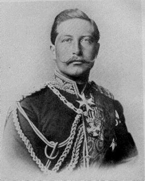 L’empereur Guillaume IIGuillaume II porte une responsabilité majeure dans le déclanchement de la guerre. S’il courtise épistolairement Nicolas II, dans les faits, il soutient Vienne contre Saint Pétersbourg, et la Sublime Porte contre la Sainte Russie. Il incite la Russie à se tourne vers l’Extrême Orient, comme Bismarck encourageait l’expansion ruineuse de la France en Afrique, satisfait de la voir se détourner ainsi du concert des Nations européennes. A cette rivalité avec l’Angleterre, s’ajoute la crainte réelle de la montée en puissance de la Russie sur le continent. Cette crainte se retrouve parfaitement dans cette lettre du 17 juillet 1914, du ministre des Affaires Etrangères allemand à son ambassadeur à Londres : « La Russie n’est pas prête à la guerre. Ni la France, ni l’Angleterre ne semblent actuellement désirer une guerre. Dans quelques années, la Russie aura achevé ses projets militaires et sera en mesure de nous écraser… Je ne veux pas de guerre préventive, mais, si la lutte se présente, il ne faut pas reculer. »
C’est pour faire pièce à la puissance anglaise et pour contenir la puissance russe que l’Allemagne se rapproche progressivement de la Turquie, et influe de manière décisive sur la structure militaro-politique issu de la révolution « jeunes Turcs ».
I Aux origines de l’alliance germano-turque
a) L’Empire Ottoman à la veille des guerres balkanniques :
En 1912, à la veille des guerres balkaniques et de la Première Guerre Mondiale, l’Empire ottoman est en pleine décomposition. Depuis l’indépendance de la Grèce en 1830, le processus de délitement s’est accéléré et les mouvements nationaux, soutenus par la Russie, déstabilisent et amenuisent la Sublime Porte. A l’époque où Constantinople s’adresse à Berlin pour demander un soutien technico-militaire, l’Empire Ottoman subit une double défaite contre la Russie, dans les Balkans et dans le Caucase lors de la guerre russo-turque de 1877-1878. En 1898, la Crête est perdue de facto. L’Empire n’a rien à opposer à la France qui occupe Tunis en, et finit par se soumettre à la volonté italienne en Lybie en 1912.
La collaboration avec l’Allemagne est d’abord une volonté du Sultan, puis celle d’Enver Pacha, personnage clé de la révolution « jeunes Turcs ». En 1908, en effet, l’affaiblissement du pouvoir du Sultan et l’échec des tentatives de réformes sont à l’origine de la révolution « jeune Turcs », menée par de jeunes fonctionnaires et militaires regroupés au sein du Comité Union et Progrès (CUP). Ces jeunes officiers sont originaires de la partie européenne de l’Empire Ottoman et ont l’occasion de se frotter aux armées européennes dont ils souhaitent s’inspirer.
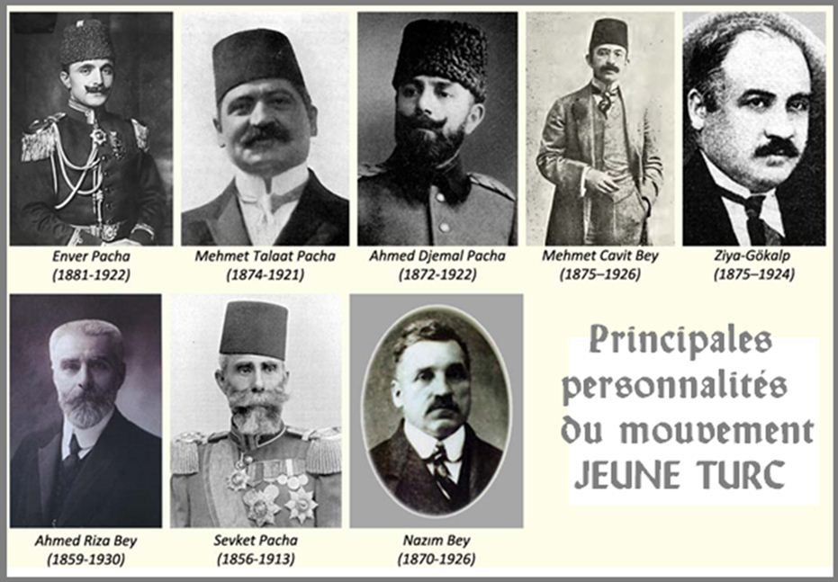On peut considérer que pour la région des Balkans, la Première Guerre Mondiale débute en 1912, au moment du déclanchement des guerres balkaniques, elles-mêmes encouragées par l’impuissance de l’Empire face l’invasion de la Tripolitaine et de l’archipel du Dodécanèse par l’Italie. Cette dernière invasion déplait d’ailleurs fortement à l’Allemagne, qui n’y peut pas grand-chose, car elle souhaite maintenir l’Italie dans son alliance.
L’Empire Ottoman joue donc la carte de l’alliance allemande et se trouve pris dans l’affrontement de cette grande puissance continental européenne, face à la puissance maritime anglaise. Cette alliance n’était pourtant pas évidente, l’Angleterre et la France n’avaient-elles pas fait la guerre contre la Russie en Crimée au côté des Ottomans ? En outre malgré le projet de chemin de fer Berlin-Bagdad, les Français et les Anglais restent les premiers investisseurs dans l’Empire.
Si, 1912, l’Empire ottoman n’est plus que l’ombre de lui-même, il reste une puissance méditerranéenne par le contrôle des détroits entre la mer Egée et la mer Noire, et des littoraux de l’Anatolie et de ses territoires arabes, syriens et palestiniens.
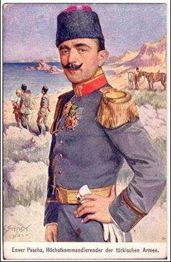L’entrée de la guerre de la Turquie au côté de la Triplice, malgré les raisons que nous avons évoquées, reste surprenante. L’intérêt pour l’Allemagne est évident mais il l’est moins pour la Turquie qui sort épuisée et perdante des guerres balkaniques. L’alliance avec les Empires centraux est à mettre sur le compte de la nouvelle ambition impériale du triumvirat « jeunes Turcs », arrivé au pouvoir en 1908 et disposant désormais de tous les pouvoirs en 1913. Il s’agit du très germanophile Enver Pacha, ministre de la Guerre, 33 ans en 1914, qui arrive à convaincre Djemal Pacha, ministre de la Marine et Talaat Pacha, ministre de l’Intérieur, de signer, le 2 juillet 1914, un traité d’alliance militaire avec l’Allemagne contre la Russie. Ils espèrent compenser les pertes balkaniques par une réunification des peuples turcophones d’Asie Centrale, au détriment de la Russie.
b) Une alliance nécessaire à l’Allemagne :
L’entrée en guerre de l’Empire Ottoman se fait sous la pression des Allemands, qui souhaitent voir la Russie détourner une partie de ses forces sur son flanc sud et empêcher également une liaison maritime aisée entre la Russie, la France et l’Angleterre. L’alliance turque permet aussi à l’Allemagne d’empêcher les livraisons de grains par la Russie, qui est une de ses principales sources de revenus.
Tout au long de sa correspondance avec Nicolas II, Guillaume II s’efforce de convaincre son cousin qu’il partage le même ennemi, l’Angleterre. Cela implique que la Russie abandonne la mission qu’elle s’est fixée, de protéger les peuples orthodoxes. Guillaume II réclame donc de la bienveillance de la part de Nicolas II, vis-à-vis de Constantinople avec qui il bâtit son alliance, tout en lui rappelant que Français et Anglais se sont ligués contre lui en 1853. S’efforçant de convaincre son cousin que tout cela n’est que manigance de l’Angleterre, le Kaiser écrit à son cousin, le 18 août 1898 : « Les Anglais s’efforcent de trouver à tout prix de trouver une armée continentale qui se battrait pour ses intérêts ! Je suppose qu’il ne lui sera pas facile d’en avoir une – en tout cas, ce ne sera pas la mienne. »
Guillaume II s’appuie sur la représentation conservatrice de la « Sainte Alliance », fondé par l’Empereur Alexandre III. Dans cette vision du monde, l’Allemagne, l’Autriche et l’Empire Ottoman sont des puissances conservatrices, menacées par des mouvements révolutionnaires soutenus par ce que le Kaiser appelle dans une lettre à Nicolas II, datée du 18 novembre 1903, la « combinaison de Crimée ». La politique de Guillaume II consiste également à éloigner la Russie des enjeux européens et turques, en orientant Nicolas II vers les contrées asiatiques, aussi se réjouit-il le 10 octobre 1904, de voir la flotte russe de la mer noire rejoindre la flotte de la Baltique en Mandchourie. Ce soutien moral de Guillaume II dans la guerre contre le Japon, ne l’empêche pas de profiter de l’affaiblissement de la Russie lié à l’humiliation du traité de Portsmouth. L’Allemagne soutient en effet, sans discussions, l’annexion de la Bosnie par l’Autriche en 1908. Cette nouvelle humiliation pèsera lourdement sur la décision de la Russie de soutenir la Serbie en 1918.
II Une aide militaire et un modèle politique
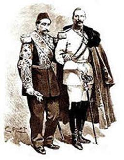a) L’ambition politique allemande :
L’Allemagne de Guillaume II a un grand projet continental, qui s’inscrit toujours dans sa rivalité avec l’Angleterre, dont le chemin de fer Berlin-Bagdad est la pierre d’achoppement. Il souhaiterait d’ailleurs que la Russie en fasse partie. Il évoque ainsi dans une lettre, daté du 3 janvier 1902, son chemin de fer comme une route permettant de contourner, par la terre, la supériorité maritime de l’Angleterre. Dans ce projet continental, la constitution d’une alliance économique et militaire solide entre l’Allemagne et la Turquie a donc toute sa place. A côté de ce projet géopolitique global, l’Allemagne de Guillaume II tient à modeler la Turquie nouvelle sur son modèle politico-économique, dont elle ne doute pas de la supériorité.
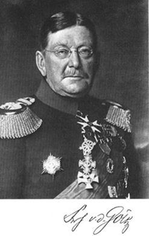Jusqu’en 1870, c’est la France qui possède une mission militaire à Constantinople. Mais en 1877, la IIIème République décline la demande de prolongation de cette aide militaire. Le Sultan se tourne alors vers l’Allemagne, qui répond positivement à la demande en 1882. La première mission militaire allemande arrive en juin de la même année. Elle comprend quatre officiers, dont un cavalier et deux artilleurs. En 1883, la mission est rejointe par le major Colmar von der Goltz, qui en prendra le commandement dès 1885. La mission s’efforce de « prussianiser » la Turquie, selon le principe militariste de la « Nation armée ». Dans ce cadre, l’armée turque s’équipe de matériels allemands (en 1913, les canons Scheider de l’armée bulgares répondront ainsi aux canons Krupp allemands de l’armée turque). Dès le début de leur mission, les officiers allemands dressent un constat accablant de l’état de l’armée turque et propose une série de réformes trop radicales pour être acceptées par les conseillers du Sultan, dont le surnom « vieux Turcs » en dit long sur leur ouverture aux réformes.
A partir de 1885, Colmar von der Goltz adopte une approche plus diplomatique et parvient à redonner un nouvel élan aux réformes tant nécessaires. L’influence de Goltz dépasse le domaine militaire et touche le domaine des relations internationales où la realpolitik offre une approche structurée qui manquait à l’administration turque.
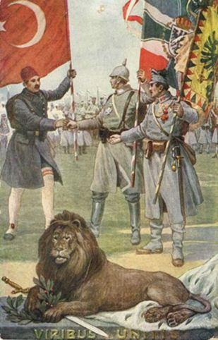Goltz s’implique profondément dans la formation des jeunes officiers pour la faire se rapprocher du modèle allemand. Il influencera profondément les « jeunes Turcs ». C’est d’ailleurs un des buts allemands, dans le cadre de cette mission, que de germaniser les futures élites de l’Empire, afin de disposer d’un considérable relai d’influence. Goltz, nommé maréchal de l’armée ottomane, meure d’ailleurs pendant la grande guerre sur le front irakien à la tête des troupes turques, le 19 avril 1916. Odile Moreau résume bien l’action de l’officier prussien : « Goltz a non seulement germanisé l’armée tuque mais il a aussi grandement influencé la vision militaro-politique moderne de l’Allemagne dans le monde, notamment dans cette région très sensible pour son pays et l’Europe. »
Les officiers supérieurs allemands s’efforcent également d’entretenir des relations personnelles avec les chefs du gouvernement turc, Enver Pacha reste très proche de l’attaché militaire Strempel. L'Ambassadeur américain à Constantinople, Morgenthau, souligne également l’importance du choix par Guillaume II, du baron von Wangenheim comme ambassadeur à Constantinople et les liens étroits qu’entretenait ce dernier avec Enver Pacha : « Depuis des années, ses sympathies étaient allées au Kaiser. L'Empire germanique, son armée et sa marine, sa langue, son gouvernement autocrate, tout enfin exerça un charme fatal sur ce fondateur de la démocratie turque. A la chute d'Abdul Hamid, Enver se trouvait en mission militaire à Berlin, où le Kaiser, qui avait de suite reconnu en lui un instrument capable de seconder ses projets en Orient, se l'attacha de différentes façons. Il vécut longtemps à Berlin, en qualité d'attaché militaire, ce qui le rapprocha encore davantage de l'Allemagne, de sorte que lorsqu'il revint à Constantinople il était presque plus Allemand que Turc. (…) Lorsqu'il devint Ministre de la Guerre, Wangenheim le flatta, le cajola, s'amusa de ses ambitions de jeune homme et dut sans aucun doute lui promettre l'appui absolu de l'Allemagne pour les réaliser. Au surplus, dans les entretiens privés, Enver ne cachait pas son admiration pour ce pays. Si bien que sa nomination au poste de Ministre de la Guerre fut virtuellement une victoire allemande. »
La proportion d’officiers allemands au sein de l’armée turque va en augmentant jusqu’en 1914. Les spécialistes sont de plus en plus nombreux et bénéficient sur place de conditions très attrayantes. Au moment des guerres balkaniques, le nombre d’officiers allemands présents dans l’armée turque est considérable. Cette présence au sein de l’armée même, influera beaucoup sur la décision des « jeunes Turcs » de rejoindre la « Triplice ». Dans l’autre sens, à partir de 1883, des officiers stagiaires turcs sont envoyés en Allemagne. Ces formations étaient très demandées par les jeunes officiers, mais les « vieux Turcs » se méfiaient d’eux à leur retour et le Sultan les écarta. Nombreux participèrent ainsi à la révolution « jeunes Turcs ».
En l’espace de vingt-cinq ans, une centaine de jeunes officiers ottomans furent formés dans l’armée allemande. Ces officiers furent par la suite le soutien le plus important du courant allemand dans l’armée ottomane, aidés pour cela par les nombreuses publications en allemand et la fondation de la « Kriegsakademie » turque, pour les jeunes officiers.
Seul la marine finit par échapper aux Allemands puisqu’à la fin de l’année 1913, c’est une délégation britannique, dirigée par l’amiral Limpus, qui reçoit la mission d’assistance auprès la flotte ottomane. Les Anglais remplacent alors, les colonels allemands Starke et Kalau vom Hofe, qui avaient été chargés de cette mission depuis 1891.
III Un résultat catastrophique
Que ce soit avant ou pendant la Première Guerre Mondiale, l’alliance allemande s’avère être un désastre pour l’Empire Ottoman, et d’une certaine façon une des causes principales de sa disparition en tant que tel.
a) Avant et pendant la première guerre balkanique :
Les interventions allemandes en faveur du Sultan sont très limitées dans leur efficacité, et cela apparaît dès la crise crétoise. Après avoir réprimé dans le sang une révolte sur l’île en 1868, l’Empire Ottoman est de nouveau aux prises avec une insurrection en 1898. Les choses tournent mal pour le Sultan, tandis qu’Anglais, Français et Russes se mettent d’accord pour donner à l’île un statut d'autonomie sous tutelle internationale. Le 20 octobre 1898, Guillaume II tente d’influer sur la position de Nicolas II, insistant sur le rôle sournois de l’Angleterre et recommandant au contraire une alliance entre la Turquie, l’Allemagne et la Russie pour faire pièce à la perfide Albion. La requête de l’Empereur allemand ne trouve bien sûr aucun écho côté russe. Le 6 mai 1900, Guillaume II tente de nouveau de convaincre son cousin que « la Turquie n’est pas un homme mourant » et qu’ « elle vit au contraire d’une vie pleine », qu’il faut prendre garde « d’atteindre l’honneur national des Musulmans ou de leur calife. »
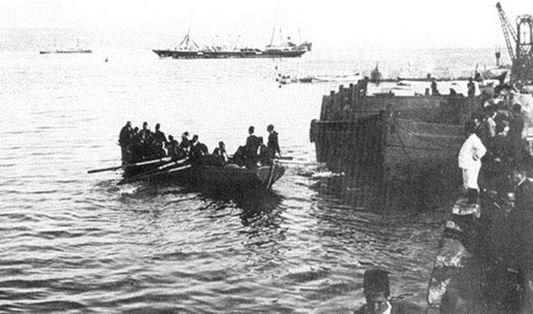
Départ de l'armée turque depuis le port de Souda en novembre 1898
Inefficace en Crête, l’aide germanique ne l’est pas plus en Lybie. L’Allemagne ne peut modérer les appétits de son allié italien en Tripolitaine. La défaite turque dans le Dodécanèse et la chute de la province africaine sonne comme un appel au combat pour les peuples chrétiens des Balkans et est le véritable déclencheur des guerres balkaniques, qui voient la défaite des armées turques, dont la « prussianisation » s’avère un échec. Pas plus que les interventions de Guillaume II envers son cousin, Nicolas II, la formation militaire procurée aux armées ottomanes ne leur permettent d’éviter la défaite contre les peuples balkaniques. La bataille de Lüleburgaz (29 octobre au 2 novembre 1912) démontre que l’armée turque est incapable tirer profit de ce que les instructeurs allemands lui a appris. C’est d’ailleurs l’opinion un officier supérieur bulgare : « La bataille de Lüleburgaz a été livrée selon les principes qu’on enseigne en France à l’Ecole de Guerre. Elle marque une victoire de l’attaque centrale sur l’attaque enveloppante, de la méthode française sur la méthode allemande. C’est à l’idée bien française du choc à l’endroit où l’ennemi est le plus fort, que nous devons le succès de nos armes. » (1)
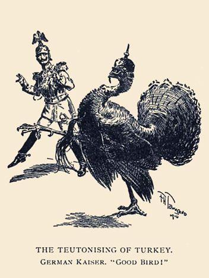Les purges des officiers expérimentés à partir de 1908, le sous encadrement et la présence, au contraire, d’officiers sans expérience expliquent ces résultats catastrophiques. Pas de logistique de transmission, de service de santé. Les Allemands ont en fait enseigné une doctrine efficace, quand elle est appliquée par une armée moderne, comme l’armée du Kaiser, mais catastrophique pour une armée du niveau de celle des Ottomans en 1912. Les systèmes d’équipement et de conscription se sont avérés inefficaces. Le tourbillon de réformes militaires allemandes qui s’est abattu sur l’armée turque s’est trouvé inadapté au caractère national. Le général Izzet-Fuad résume ainsi : « J’ai la conviction que nous avons fait de la très mauvaise imitation allemande, tandis que nous aurions pu continuer à nous assimiler tous les progrès qui nous arrivaient de France, progrès que la similitude des caractères, l’ancienneté et la fréquence des relations, introduisaient chez nous très naturellement, sans choquer nos idées, nos oreilles, nos regards et nos finances… » . (Général Izzet Fuad-Pacha, Paroles de vaincu..., Après le désastre-avant la revanche, Librairie Chapelot, Paris, 1913, p.14.).
Cette « prussianisation » manquée s’accompagne par des achats de matériels allemands, effectués en dépis du bon sens, qui grèvent les finances turques, déjà dans un état catastrophique. Les mitrailleuses, les aéroplanes et autres équipements s’avèrent inadaptés et impossible à déplacer ou à entretenir. Le principe de « Nation en armes » reste un vœu pieux dans un pays qui compte 23 millions d’habitants, dont 16 millions de musulmans et 7 millions de chrétiens. Les unités composées de chrétiens rechignent à se battre quand elles ne désertent pas purement et simplement. La défaite de l’Empire Ottomane dans les Balkans, le conforte pourtant dans sa volonté d’alliance avec les Empires centraux, car les « jeunes Turcs » recherchent désormais vers les steppes d’Asie Centrale, un renouveau impérial.
b) La Première Guerre Mondiale :
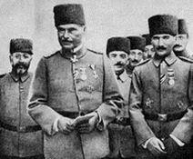 Otto Limans von SandersEn mars 1914, l’Allemagne contrôle les postes clés de l’armée ottomane. Liman von Sanders, arrivé en décembre 1913, pour prendre la tête de la mission militaire, devient le conseiller d’Enver Pacha et prend le commandement du premier Corps d'Armée turc. Le général allemand Bronssart von Schnellendorf devient chef d'état-Major.
L’entrée en guerre officielle de la Turquie a lieu le 31 octobre 1914 et l’entrée en guerre effective, le 2 novembre 1914, à l’occasion du bombardement des ports russes de la mer noire. Cette attaque est menée par deux navires allemands passés sous pavillon turc, mais toujours commandés par l’amiral allemand Wilhelm Souchon, désormais commandant de la flotte turque.
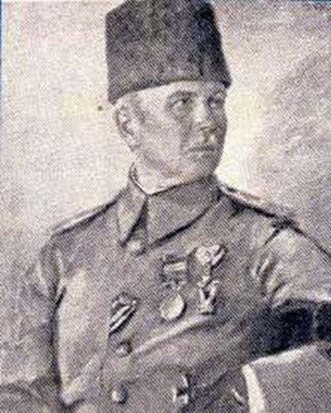 Bronsard von SchellendorfLa première véritable opération turque, dirigée contre la Russie, tourne à la catastrophe. Enver Pacha, encouragé par le général von Schellendorf, qui souhaite attirer des forces russes loin du front européen, lance fin 1914, une campagne d’hiver dans le Caucase. Mal équipée, mal préparée, l’armée turque est écrasée par l’armée russe le 15 janvier, près de la ville de Kars. Sur 90 000 soldats Turcs, seuls 12 000 en sortiront vivant. Le génocide arménien est la conséquence de cette écrasante défaite de l’armée turque face aux Russes. C’est la seule tentative turque contre la Russie durant la Première Guerre Mondiale. Les Ottomans doivent désormais défendre les Dardanelles contre le corps expéditionnaire franco-anglais, puis protéger leur empire contre les révoltes arabes.
Au profit de la Révolution d’octobre et du traité de Brest-Litovsk la Turquie récupère Batoum et Kars en 1918, comme lot de consolation.
L’alliance allemande s’avère avoir été une erreur historique pour l’Empire Ottoman. Le bilan humain, politique et économique, en 1918, est catastrophique.
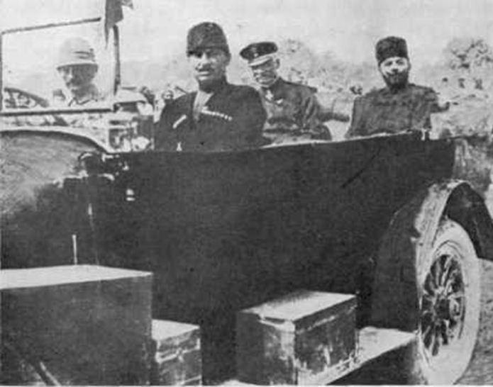
Djemal Pacha (à droite sur la banquette arrière) et le général allemand Erich von Falkenheyn à Jérusalem en 1917
Le monde arabe est définitivement perdu. L’Empire ottoman multi-ethnique disparait et laisse place à une Turquie ethniquement et religieusement homogène, avec un nouveau projet politique. Durant la deuxième guerre mondiale, les dirigeants turcs ne commettront pas la même erreur de l’alliance avec l’Allemagne. L’entrée en guerre de la Turquie contre l’Allemagne en 1944 lui permettra même de figurer même parmi les vainqueurs. L’emprunte allemande a cependant profondément marqué la Turquie et particulièrement son armée dont la germanisation est encore un trait caractéristique aujourd’hui.
X.M.
Bibliographie
1. Edward J. Erickson - Defeat in Detail: The Ottoman Army in the Balkans, 1912-1913.
2. Praeger (February 28, 2003).
3. Henry Morgenthau - Ambassador Morgenthau's Story - Kessinger Publishing (2004, réédition de 1918).
4. Sean McMeekin -The Berlin-Baghdad Express: The Ottoman Empire and Germany's Bid for World Power - Belknap Press; Reprint edition (April 9, 2012).
5. « L’Empire ottoman et la conduite de la guerre », dans L'ENCYCLOPÉDIE DE LA GRANDE GUERRE 1914-1918, Audoin-Rouzeau & Becker - Bayard, 2004.
6. Odile Moreau - L'Empire ottoman à l'âge des réformes. Les hommes et les idées du « Nouvel Ordre » militaire 1826-1914—MAISONNEUVE & LAROSE, 2007.
Partager cette page